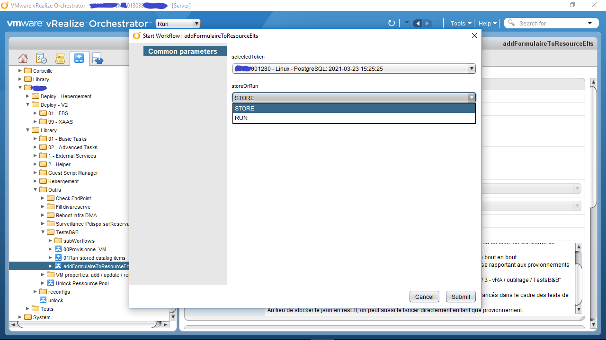
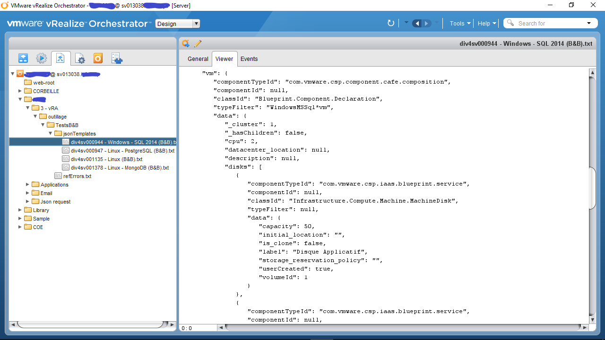
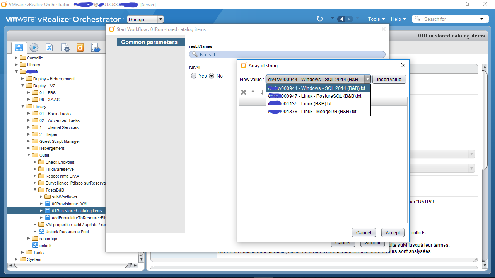
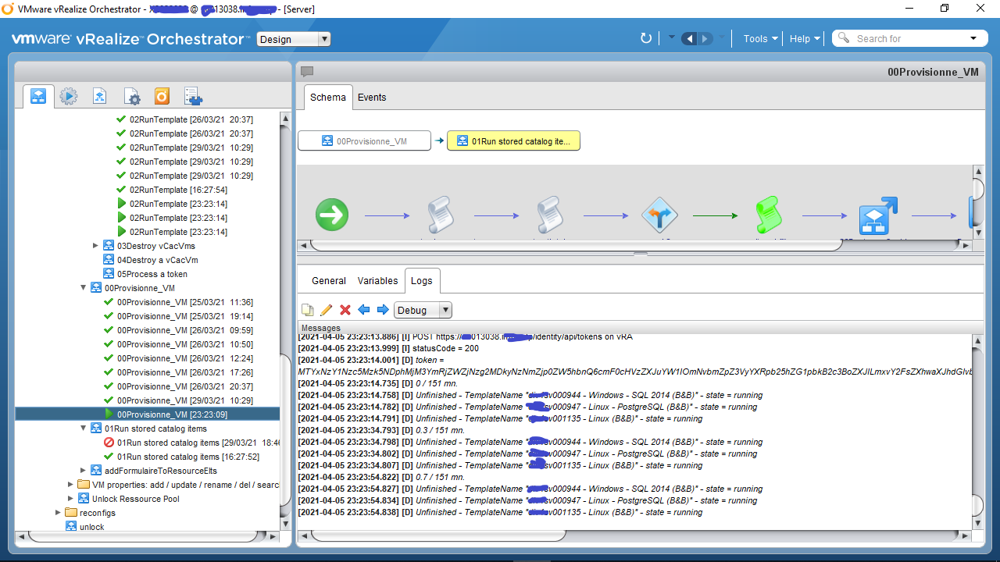
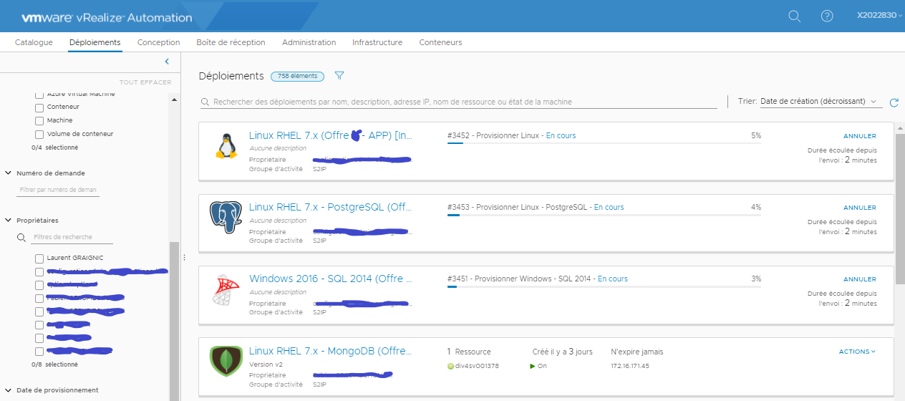
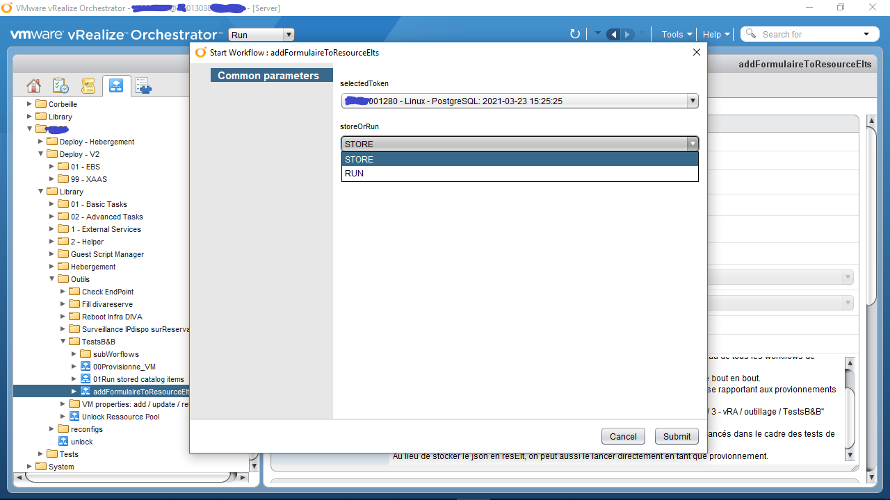
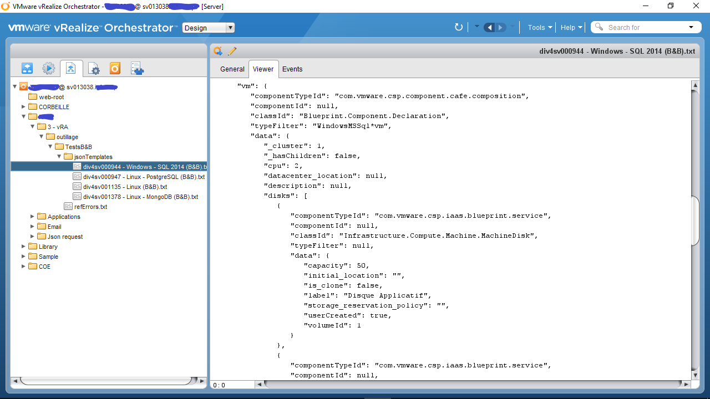
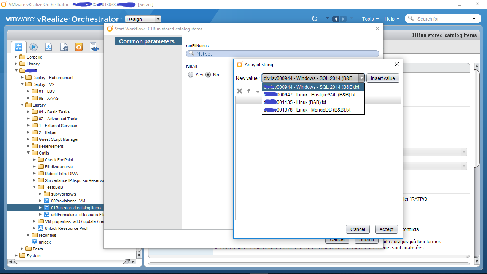
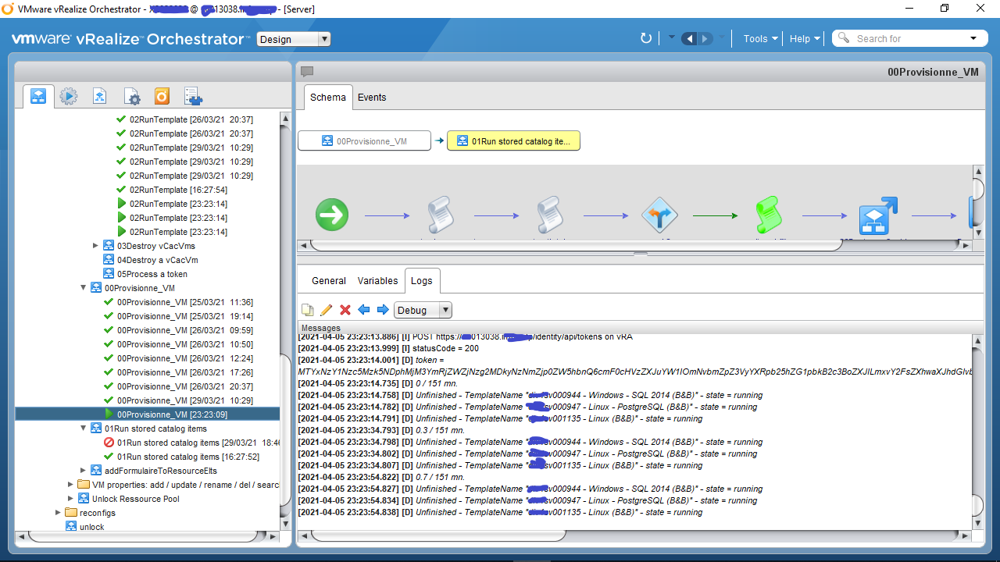
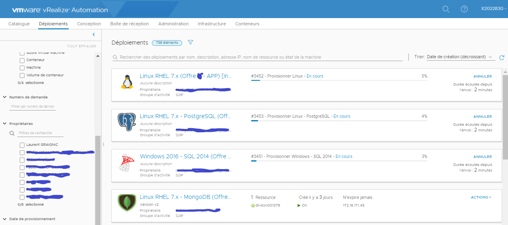

La solution proposée par AUTOM@CLOUD :
Ce que l'on doit pouvoir faire :
Invoquer périodiquement le provisionnement de VMs correspondants aux demandes les plus critiques
De quelle façon simple ?
En sélectionnant parmis les provionnements déja effectués, ceux à reproduire pour les tests de bout en bout
Ce que l'on veut en obtenir :
En cas de fonctionnement
La destruction des VMs produites.
En cas de dysfonctionnement
Erreur connue Alerter directement le MOE en donnant le diagnostique
Erreur inconnue Alerter l'orchestration pour établir un diagnostique
Et finalement :
Capitaliser automatiquement sur les erreurs connues !
------------ Concrètement --------------
D'abord on sélectionne parmis les deploiements déjà effectué celui à reproduire dans les tests de bouts en bout:

L'exécution de ce workflow a généré un resource element représentant un template de deploiement:

Ensuite, le workflow "Run stored catalog items" a pour rôle de lancer le provisionnement de ces templates (Tous, ou une sélection):

Le provisionnement de chaque template est individuellement pris en charge par le workflow "RunTemplate" qui surveille
l'exécution dans vRA jusqu'à son terme

En utilisant cet outillage, les tests de bout en bout en bout sont lancés périodiquement depuis un unique workflow nommé
"Provisionne_VM". Il encapsule "Run stored catalog items" avec l'option "RunAll" et surveille les exécutions multiples de "RunTemplate"

On peut voir pendant ce temps là dans vRA les exécutions correspondantes qui se produisent:

D'abord on sélectionne parmis les deploiements déjà effectué celui à reproduire dans les tests de bouts en bout:

L'exécution de ce workflow a généré un resource element représentant un template de deploiement:

Ensuite, le workflow "Run stored catalog items" a pour rôle de lancer le provisionnement de ces templates (Tous, ou une sélection):

Le provisionnement de chaque template est individuellement pris en charge par le workflow "RunTemplate" qui surveille
l'exécution dans vRA jusqu'à son terme
En utilisant cet outillage, les tests de bout en bout en bout sont lancés périodiquement depuis un unique workflow nommé
"Provisionne_VM". Il encapsule "Run stored catalog items" avec l'option "RunAll" et surveille les exécutions multiples de "RunTemplate"

On peut voir pendant ce temps là dans vRA les exécutions correspondantes qui se produisent:

| Bien-sûr, cela ne s'arrête pas là : A l'issu de ses exécutions, les VM produites sont automatiquement détruites, mais surtout, les provisionnements en erreur sont analysés. Le workflow a la capacité d’apprendre à reconnaître les erreurs déjà rencontrées (Et référencées) de par le passé (En s'affranchissant du delta dû aux ID via un algorythme de distance de Levenstein) et d'ainsi capitaliser sur leur résolution pour envoyer des mails intégrant ces informations vers les équipes concernées: Un mail d'alerte indique le message d'erreur, ses causes possibles, les dates d'occurences de l'erreur, et fournit en pièce jointe les inputs de payload ayant servis au provisionnement. Une base de donnée json (Dans les resouces élements) s'enrichie automatiquement des problèmes rencontrés et de leurs solutions: Egalement Les capacités de génération de tempate à la demande et de provionement de VM en masse sont utilisables de façon à offrir en plus, un puissant outil permettant d'industrialiser les recettes techniques. |